Pam and Dan's Holiday 2019 Letter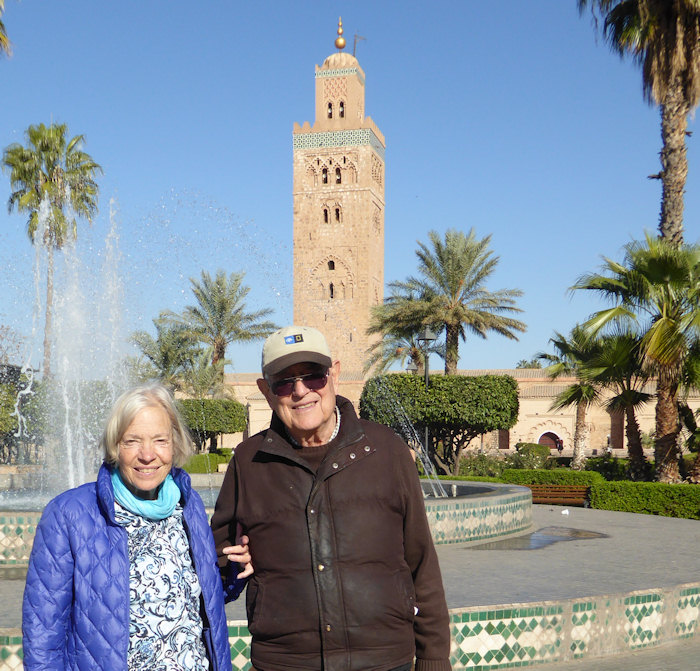
In early December we travelled to Morocco with long-time friends Scheri Chavez and Amy Schmitt. The trip was arranged and guided by National Geographic, and featured fascinating destinations--Fes, Mekenes, Rabat, the High Atlas Mountains, and Marrakech. Here we are in the gardens of the main mosque in Marrakech, the oldest in Morroco.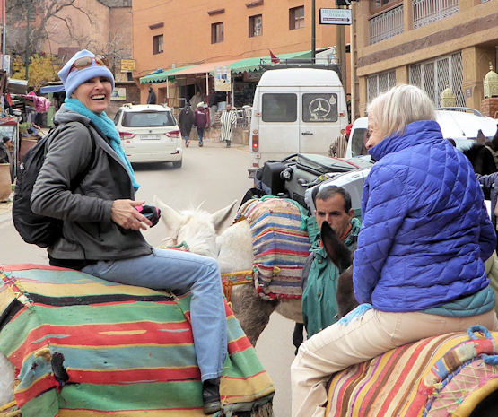The weather was cool--we had snow in the mountains one night, but similar to late Autumn in Santa Fe. The hotels were exotic, and because we were outside the regular tourist season, in many cases we seemed to have them to ourselves.In the Atlas Mountains, our hotel was sufficiently remote that a mule ride of about 15 minutes was required to reach it, including both us and our luggage. The mules showed patience and expertise, and our party thoroughly enjoyed the experience.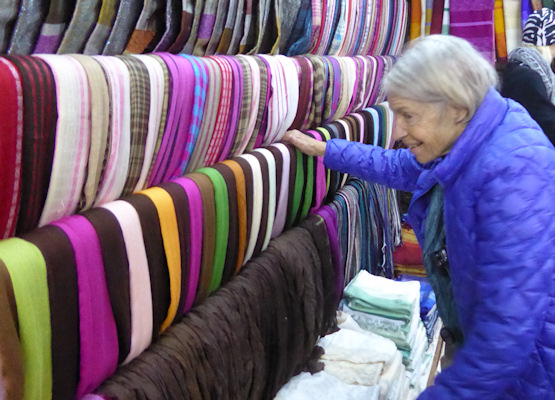Morocco has been a shoppers' paradise since the time of the ancient camel caravans from the orient and southern Africa. It is possible to lose oneself--literally--in some of the largest souks and kasbahs. Pam is shown here going through some of the fine Moroccan woven fabrics available.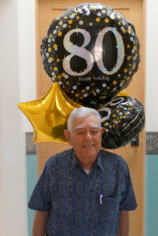Dan celebrated his 80th Birthday with friends and neighbors. However, the definite highlight was the surprise appearance of sons David and Colin, their wives Nancy and Sussy, and grandson Dean. They flew in from Los Angeles, picked up a car, loaded it up with balloons and party favors, and appeared at the front door in the middle of the party. Pam was in on the surprise, and was able to capture the moment as Sussy, Dean and Colin made their entrance. Dean, at the tender age of 9 months, was a perfect gentleman, and even sat patiently in his high chair for a visit to one of our favorite restaurants for a bit of authentic Northern New Mexico cuisine. 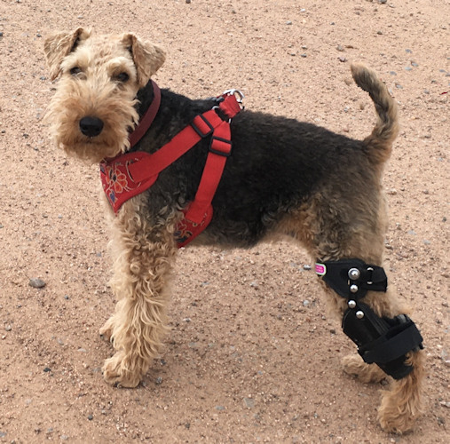 Zipper, our Welsh Terrier, celebrated her 10th birthday this year and still loved to zip until in July, while racing her nextdoor dachshund buddy around our back yard, she tore the CCL ligament in her left hind leg--similar to an ACL tear in a human knee. She underwent extensive rehab, including a doggie water treadmill and a custom brace. She has recovered well--so much so that our main concern is to keep her from zipping around too enthusiasticly again and reinjuring her bad leg, or hurting her other hind leg! With her brace and harness on for a morning walk, she looks like a couple of body piercings and an earring are all she needs to join a Biker gang. "Hey, you lookin' at me?" In August, we visited Pam's long-time friend Judy Blanchard and her sister Nancy at their new home in Carbondale, Colorado. Carbondale is an old mining town that has become decidedly upscale, and become something of a bedroom community for Aspen. 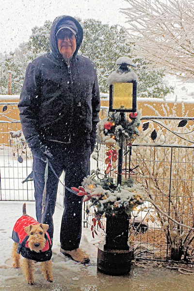 Winter came decidedly early to Santa Fe this year, with several inches of snow for Thanksgiving. Zipper loves the snow--with a fervor that only one who does not have to shovel it can muster! Zipper here is dressed and ready for her morning walk. Dan, although similarly well dressed, is still working up enthusiasm. Anyone who doubts Zipper's enthusiasm for the white stuff can check out this video: https://youtu.be/ew4Dh-jYUXY
Some extra images from this year: 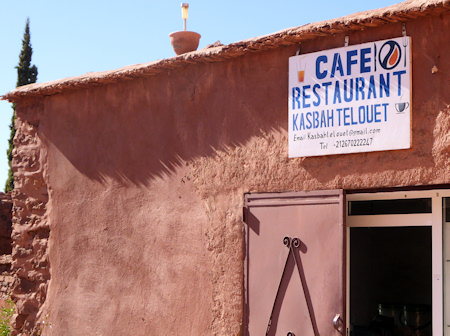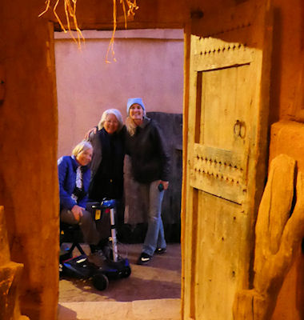
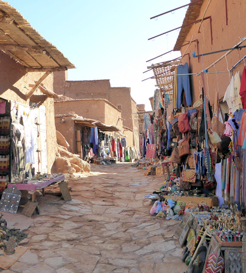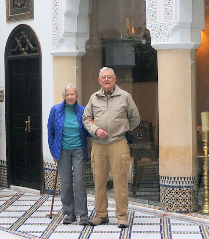
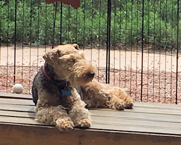
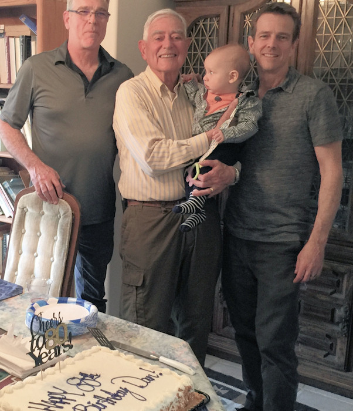 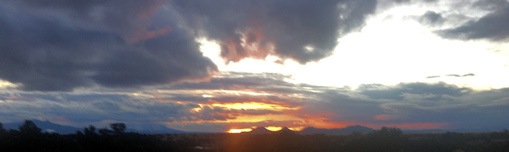
|